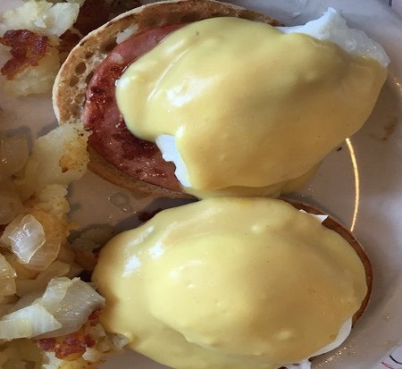
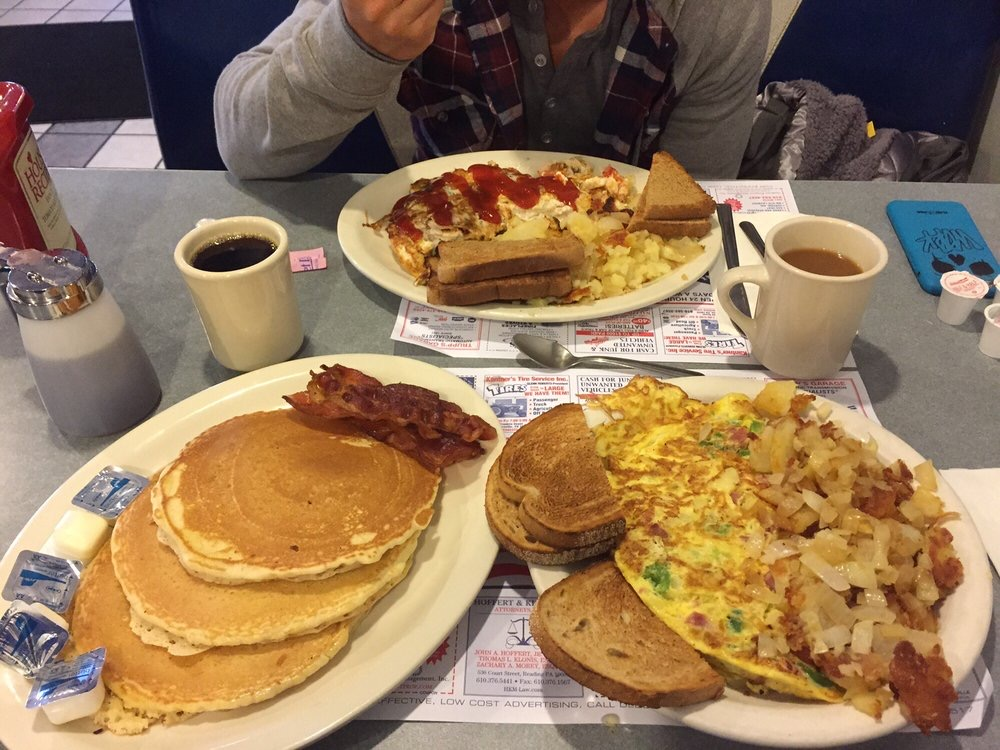
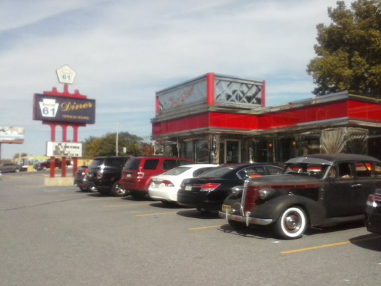
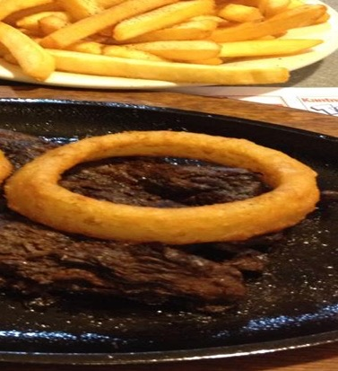
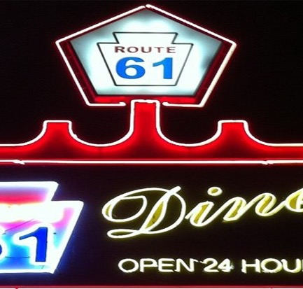
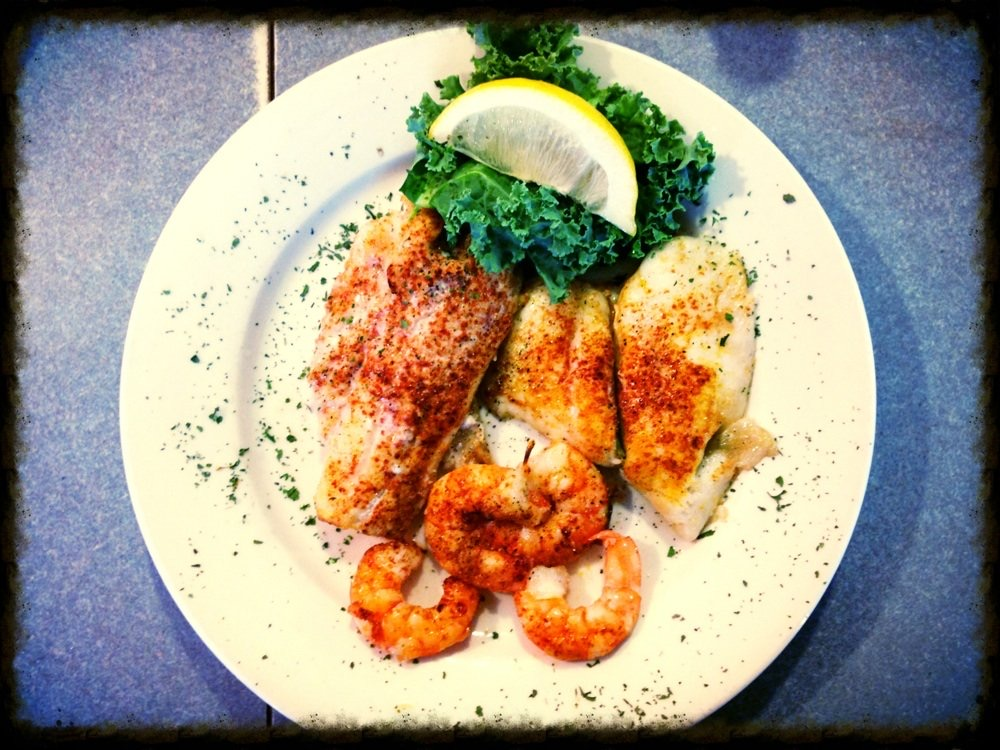
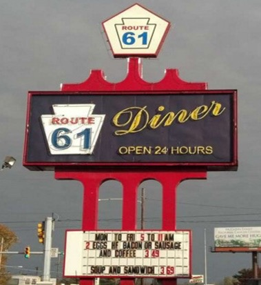
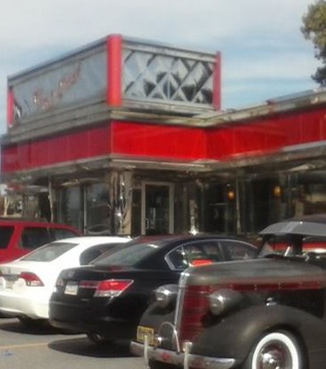

Breakfast
Three-egg omelettes, steak & eggs, Benedicts (classic, Crabby and Irish), pancakes, French toast and homemade Belgian waffles. Weekday breakfast specials run Monday to Friday, 5 to 11 am.
Breakfast menuReading, PA · Centre Avenue
Breakfast, lunch, dinner and late-night plates at the Route 61 Diner. Open 24 hours a day, seven days a week, with breakfast on the menu around the clock.
Open now · 24 hours, every day


Something for every hour
Three menus, one counter that never closes. Stop in whenever you get hungry.

Three-egg omelettes, steak & eggs, Benedicts (classic, Crabby and Irish), pancakes, French toast and homemade Belgian waffles. Weekday breakfast specials run Monday to Friday, 5 to 11 am.
Breakfast menu
Burgers, hot paninis, wraps, triple deckers and Greek sandwiches, then classic entrees, pasta, steaks & chops and fresh seafood, served with soup, the salad bar and a vegetable.
Lunch & dinner menu
The Night Menu keeps it simple: starters like disco fries and wings, burgers, cheesesteaks, gyros, hot open sandwiches, classic entrees and a full Breakfast Anytime section.
Night menuStraight from our kitchen



Seniors
Senior 55+ breakfast: one egg any style, single pancake or French toast, two-egg omelette, grits bowl, single egg Benedict and the 61 Classic. Monday to Friday it includes a cup of coffee or hot tea.
Senior Menu (62 & older): 11:00 am to 9:00 pm daily, excluding holidays, with one vegetable, soup and the salad bar.
Senior menusLittle ones
There’s a kids menu for breakfast and one for lunch and dinner, so the whole table can order.
Kids menusTake it home
Take your meal home. Order online, or call the diner and we’ll get it started.


Our diner
For us, the best quality is a customer who leaves completely satisfied. That’s why the Route 61 Diner keeps its doors open 24 hours, serving good, filling food from first coffee to the late-night crowd.
Look for the red-and-chrome diner and the keystone sign on Centre Avenue. Inside you’ll find homemade gravy on the hot plates and a menu that runs from omelettes to broiled seafood. We promise to keep doing our best, with strength, honesty and pride.
Yes. The Route 61 Diner is open 24 hours a day, 7 days a week.
Yes. The Night Menu has a Breakfast Anytime section: eggs, omelettes, pancakes, French toast, Belgian waffles, eggs Benedict and creamed chipped beef.
Monday to Friday, 5:00 to 11:00 am, excluding holidays. Please, no substitutions.
Two of them: the Senior 55+ breakfast menu, and the Senior Menu for guests 62 and older, served 11:00 am to 9:00 pm daily (excluding holidays) with one vegetable, soup and the salad bar.
The salad bar isn’t a take-out item with a meal, but you can take the salad bar out per container.
Yes. Use the Order Online button, or call (610) 685-9406.
Come on in